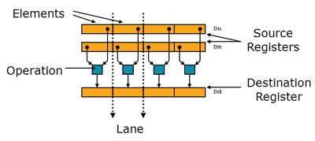

A very fast BGRA to Grayscale conversion on Iphone
Almost all image processing algorithms uses gray scale images as input source. But almost all hardware video sources provide frames in RGB/BGR(A) formats. So gray scale conversion is very popular operation. Although it’s expensive enough to cause CPU-bound bottlenecks while running on mobile processors. In this post i will show you how to use ARM NEON intrinsic to get significant performance boost of BGRA to GRAY conversion.
Color representation

Pixel color can be presented in different ways. RGB color model presents color as a combination of three base colors of different intensity. Gray scale image contains only pixel luminance value without specific color. Pixels from RGB color model can be converted to gray scale using following formula: Y = 0.2126 R + 0.7152 G + 0.0722 B. Multipliers can very depending on the color space standards. Since we are targeting to iPhone it’s necessary to remember that camera capture from iOS AVFramework provide video frames in BGRA format (alpha channel is always equals to 255). For our further steps we will ignore it.
Implementation:
First of all we need reference C++ implementation. Just to know the starting point. Here it is:
Reference C++ BGRA to Grayscale conversion function:
static void reference_convert (common::UInt8 * dest, common::UInt8 * src, int n)
{
int i;
int r,g,b;
int y;
for (i=0; i < n; i++)
{
b = *src++; // load blue
g = *src++; // load green
r = *src++; // load red
src++; // skip aplha
// build weighted average:
y = (r*77)+(g*151)+(b*28);
// undo the scale by 256 and write to memory:
*dest++ = (y>>8);
}
}
Okay, this function works relatively fast but not enough. Since iPhone has ARM CPU (Cortex A-9), it supports SIMD NEON engine which can be used for color conversion with great effort. SIMD technology allows process multiple data with one instruction call, saving time for other computations. Cutting a long story shorter – we will process eighth(!) pixels at one time.

Fortunately, you don’t have to deal with such low-level instructions directly. There are special functions, called intrinsic, which can be treated as regular functions but they works with input data simultaneously. If you want to learn more about NEON intrinsic you will found link in the “References” section.
ARM NEON Intrinsic-optimized conversion:
void neon_convert (uint8_t * __restrict dest, uint8_t * __restrict src, int numPixels)
{
int i;
uint8x8_t rfac = vdup_n_u8 (77);
uint8x8_t gfac = vdup_n_u8 (151);
uint8x8_t bfac = vdup_n_u8 (28);
int n = numPixels / 8;
// Convert per eight pixels
for (i=0; i < n; ++i)
{
uint16x8_t temp;
uint8x8x4_t rgb = vld4_u8 (src);
uint8x8_t result;
temp = vmull_u8 (rgb.val[0], bfac);
temp = vmlal_u8 (temp,rgb.val[1], gfac);
temp = vmlal_u8 (temp,rgb.val[2], rfac);
result = vshrn_n_u16 (temp, 8);
vst1_u8 (dest, result);
src += 8*4;
dest += 8;
}
}
This function process eight pixels per iteration. Great performance boost but I decided to go further and rewrite anything using assembler. This requires much more knowledge about CPU Architecture but result was worth of it.
NEON and Assembler:
static void neon_asm_convert(uint8_t * __restrict dest, uint8_t * __restrict src, int numPixels)
{
asm volatile("lsr %2, %2, #3 \n"
"# build the three constants: \n"
"mov r4, #28 \n" // Blue channel multiplier
"mov r5, #151 \n" // Green channel multiplier
"mov r6, #77 \n" // Red channel multiplier
"vdup.8 d4, r4 \n"
"vdup.8 d5, r5 \n"
"vdup.8 d6, r6 \n"
".loop: \n"
"# load 8 pixels: \n"
"vld4.8 {d0-d3}, [%1]! \n"
"# do the weight average: \n"
"vmull.u8 q7, d0, d4 \n"
"vmlal.u8 q7, d1, d5 \n"
"vmlal.u8 q7, d2, d6 \n"
"# shift and store: \n"
"vshrn.u16 d7, q7, #8 \n" // Divide q3 by 256 and store in the d7
"vst1.8 {d7}, [%0]! \n"
"subs %2, %2, #1 \n" // Decrement iteration count
"bne .loop \n" // Repeat unil iteration count is not zero
:
: "r"(dest), "r"(src), "r"(numPixels)
: "r4", "r5", "r6"
);
}
Results
I’ve done color conversion on 640x512 image (well-known graffiti image) 100 times to get more precise time measures. Here is a chart with graphical illustrations of BGRA to GRAY conversion using different algorithms. I’ve added two 3-rd party implementations (One from OpenCV – cvCvtColor, and one from Boost::Gil – copy_and_convert_pixels) to see how are they optimized. Testing hardware - IPhone 3Gs, iOS 4.2.

As we can see, NEON optimized assembler function works three times faster that C++ function with intrinsic and six times faster than pure C++ implementation.
References
- Many thanks for the Nils Pipenbrinck. This article helps me a lot!
- Coding for NEON - Part 1: Load and Stores